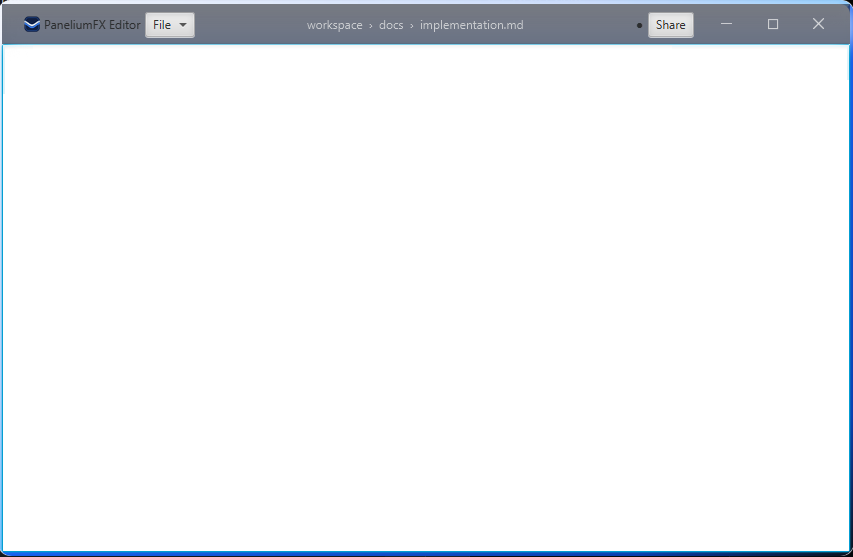

Platinum Chrome - Customize Styles¶
The ChromePane frame ships a complete default look as a JavaFX user-agent
stylesheet (ChromePane.getUserAgentStylesheet()), so a framed window is fully
styled without any application stylesheet. Every part carries stable style classes,
pseudo-classes and styleable properties; a stylesheet you add to the hosting Scene
overrides the defaults through normal CSS precedence.
Attach a stylesheet¶
val stage = PaneliumStage()
stage.content = Label("Hello, PaneliumFX!")
stage.scene.stylesheets.add(
javaClass.getResource("/my-app/chrome.css").toExternalForm(),
)
stage.show()
For PaneliumChrome.install(stage) and the manual ChromePane setup, add the
stylesheet to the Scene you created in the same way.
Style classes¶
| Style class | Node |
|---|---|
chrome-pane |
the frame root (ChromePane) |
chrome-caption-backdrop |
the frosted strip behind the caption (see Glass caption) |
chrome-caption-bar |
the caption bar |
chrome-caption-left |
leading caption slot |
chrome-caption-center |
growing center caption slot |
chrome-caption-right |
trailing caption slot |
chrome-caption-buttons |
the window-button container (plus the lower-case OS class windows, mac, linux or other) |
chrome-button |
a single window button (plus its role class minimize, max-restore or close) |
chrome-button-glyph-stroke / chrome-button-glyph-fill |
the vector shapes inside a window button |
.chrome-caption-buttons.windows .chrome-button.close:hover {
-fx-background-color: #b71c1c;
}
Pseudo-classes¶
chrome-pane reflects the window state:
| Pseudo-class | Active while |
|---|---|
:maximized |
the window is maximized |
:fullscreen |
the window is in full screen |
:active |
the window is the focused window |
:inactive |
the window is not focused |
The max-restore button also carries :maximized while the window is maximized.
.chrome-pane:inactive .chrome-caption-bar {
-fx-opacity: 0.6;
}
Styleable properties¶
Set on the chrome-pane selector. Every colour is a paint - a linear-gradient
works wherever a plain colour does.
| Property | Type | Default | Effect |
|---|---|---|---|
-panelium-surface-color |
paint | white |
fill of the window surface |
-panelium-corner-radius |
size | 8 |
rounded-corner radius of surface and border |
-panelium-border-mode |
flat | raised | sunken |
flat |
flat stroke, or a raised / sunken bevel |
-panelium-border-color |
paint | rgba(0,0,0,0.25) |
stroke paint in flat mode |
-panelium-border-light-color |
paint | rgba(255,255,255,0.9) |
bevel highlight edge (top / left for raised) |
-panelium-border-dark-color |
paint | rgba(0,0,0,0.35) |
bevel shadow edge (bottom / right for raised) |
-panelium-border-width |
size | 1 |
border thickness |
-panelium-border-style |
solid | dashed | dotted |
solid |
dash pattern of the border stroke |
-panelium-border-line-cap |
butt | round | square |
butt |
dash / segment end cap |
-panelium-border-line-join |
miter | bevel | round |
miter |
corner join of the stroke |
-panelium-border-miter-limit |
size | 10 |
miter limit for miter joins |
-panelium-border-dash-offset |
size | 0 |
phase offset of the dash pattern |
-panelium-shadow-radius |
size | 18 |
blur radius of the built-in drop shadow |
-panelium-shadow-color |
color | rgba(0,0,0,0.45) |
colour of the built-in drop shadow |
-panelium-effect |
effect | (unset) | any dropshadow() / innershadow() - replaces the built-in drop shadow when set |
-panelium-shadow-inset |
size | 12 |
transparent gutter reserved around the frame for the effect |
-panelium-caption-backdrop-blur |
size | 0 |
blur radius of the frosted caption strip; 0 disables it |
-panelium-resize-border |
size | 6 |
width of the edge/corner resize grab zones |
-panelium-caption-min-height |
size | 32 |
minimum caption-bar height |
.chrome-pane {
-panelium-corner-radius: 14;
-panelium-surface-color: linear-gradient(to bottom, #ffffff, #f2f6ff);
}
Surface, border stroke and effect¶
The border stroke is fully described: -panelium-border-mode picks a flat stroke or
a bevel, -panelium-border-style its dash pattern, and
-panelium-border-line-cap / -panelium-border-line-join /
-panelium-border-miter-limit / -panelium-border-dash-offset its geometry. A bevel
reads best with a small or zero -panelium-corner-radius.
.chrome-pane {
-panelium-corner-radius: 3;
-panelium-border-mode: raised;
-panelium-border-width: 5;
-panelium-border-light-color: linear-gradient(from 0% 0% to 100% 100%,
#f2f6ff 0%, #bcd4ff 70%, #7cc4ff 100%);
-panelium-border-dark-color: linear-gradient(from 0% 0% to 100% 100%,
#1a63f0 0%, #0b3fb0 75%, #0b1220 100%);
}
-panelium-shadow-radius / -panelium-shadow-color feed the built-in drop shadow.
For anything else set -panelium-effect to a full CSS effect - it replaces the
built-in one. Reserve room for a large blur with -panelium-shadow-inset. The effect
is dropped automatically while the window is maximized or full screen, or when
ChromePane.isShadowEnabled is false.
.chrome-pane {
-panelium-effect: dropshadow(gaussian, rgba(11, 18, 32, 0.62), 18, 0.0, 0, 5);
-panelium-shadow-inset: 18;
}
The border mode is also available in code through ChromePane.borderMode /
borderModeProperty() (ChromeBorderMode.FLAT, RAISED, SUNKEN); the rest is
CSS-only.
Glass caption (backdrop blur)¶
-panelium-caption-backdrop-blur arms a frosted strip: a blurred mirror of the
content directly below the caption band, drawn behind the caption bar. Combine it
with a translucent caption fill (an rgba(...) gradient) and the caption reads as
an Aero-style glass surface. 0 (the default) disables it completely - no snapshot,
no layer. The mirror refreshes on layout changes, not per frame.
.chrome-pane {
-panelium-caption-backdrop-blur: 28;
}
.chrome-caption-bar {
-fx-background-color: linear-gradient(to bottom,
rgba(11, 18, 32, 0.55), rgba(16, 32, 63, 0.62));
-fx-effect: innershadow(gaussian, rgba(11, 18, 32, 0.45), 10, 0, 0, 2);
}
The caption bar is plain JavaFX CSS¶
The caption bar, its three slots and the window buttons are ordinary JavaFX nodes.
Everything is styled through their own -fx-* properties - -fx-background-color
(paints and gradients), -fx-border-color / -fx-border-style, -fx-effect,
-fx-background-radius, and, on the button glyphs
(chrome-button-glyph-stroke / -fill), -fx-stroke, -fx-stroke-width,
-fx-stroke-line-cap, -fx-stroke-dash-array and -fx-fill. No paint is set in
code, so an application stylesheet fully owns their look.
Full custom theme¶
The style classes, pseudo-classes and styleable properties above are enough to
replace the whole look, not just tweak it. A single application stylesheet can
redefine every rule of the user-agent defaults - the frame metrics, the caption
bar and all four caption-button OS variants (windows, mac, linux, other) -
so the window keeps one identity on every platform.
The demo ships such a stylesheet, chrome-signature.css, toggled from the
"Chrome options" page. It derives its palette from the project logo, adds a gradient
surface, a gradient bevel, a dark-blue effect and a glass caption; use it as a
template for a complete in-house theme.
OS-driven frame geometry¶
ChromePane.captionOs (see the implementation page) also sets the corner radius,
surface, border, effect and shadow inset defaults, so the window form follows the
selected platform. Any explicit CSS value for the matching -panelium-* property on
the chrome-pane selector wins over the OS default.
Transparent scene fill¶
The chrome relies on a transparent stage and scene so that the effect can be drawn
outside the frame. When you build the Scene yourself, keep the transparent fill:
scene.fill = Color.TRANSPARENT
Leave the -panelium-shadow-inset margin around the frame free of opaque backgrounds
on the root so the effect stays visible.
Disable the effect¶
Set ChromePane.isShadowEnabled = false (or bind shadowEnabledProperty()) for a
flat frame without an effect and without the outer insets. The effect is also
suppressed automatically while the window is maximized or full screen.
Complex example¶
A single application stylesheet that replaces the whole look: gradient surface,
gradient raised bevel, custom dark-blue drop shadow, an Aero-style glass caption,
state-driven caption opacity, restyled window buttons for the windows OS variant,
and adjusted frame metrics. Attach it to the hosting Scene as shown in Attach a
stylesheet.

/* ---- Frame: surface, border, shadow, metrics ---- */
.chrome-pane {
-panelium-corner-radius: 12;
-panelium-caption-min-height: 40;
-panelium-resize-border: 8;
-panelium-surface-color: linear-gradient(to bottom, #ffffff 0%, #eef3ff 100%);
-panelium-border-mode: raised;
-panelium-border-width: 4;
-panelium-border-light-color: linear-gradient(from 0% 0% to 100% 100%,
#f2f6ff 0%, #bcd4ff 70%, #7cc4ff 100%);
-panelium-border-dark-color: linear-gradient(from 0% 0% to 100% 100%,
#1a63f0 0%, #0b3fb0 75%, #0b1220 100%);
-panelium-effect: dropshadow(gaussian, rgba(11, 18, 32, 0.62), 22, 0.0, 0, 6);
-panelium-shadow-inset: 22;
/* Aero-style glass strip behind the caption. */
-panelium-caption-backdrop-blur: 28;
}
/* ---- State-driven ---- */
.chrome-pane:inactive .chrome-caption-bar {
-fx-opacity: 0.6;
}
.chrome-pane:maximized,
.chrome-pane:fullscreen {
-panelium-corner-radius: 0;
}
/* ---- Caption bar: translucent fill so the backdrop blur shows through ---- */
.chrome-caption-bar {
-fx-background-color: linear-gradient(to bottom,
rgba(11, 18, 32, 0.55), rgba(16, 32, 63, 0.62));
-fx-effect: innershadow(gaussian, rgba(11, 18, 32, 0.45), 10, 0, 0, 2);
-fx-padding: 0 8 0 10;
}
.chrome-caption-center .breadcrumb .label {
-fx-text-fill: rgba(255, 255, 255, 0.85);
}
/* ---- Window buttons (Windows variant) ---- */
.chrome-caption-buttons.windows .chrome-button {
-fx-background-color: transparent;
-fx-background-radius: 6;
}
.chrome-caption-buttons.windows .chrome-button:hover {
-fx-background-color: rgba(255, 255, 255, 0.14);
}
.chrome-caption-buttons.windows .chrome-button.close:hover {
-fx-background-color: #b71c1c;
}
.chrome-caption-buttons.windows .chrome-button .chrome-button-glyph-stroke {
-fx-stroke: rgba(255, 255, 255, 0.9);
-fx-stroke-width: 1.1;
-fx-stroke-line-cap: round;
}
.chrome-caption-buttons.windows .chrome-button.max-restore:maximized
.chrome-button-glyph-stroke {
-fx-stroke: #7cc4ff;
}